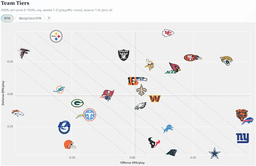
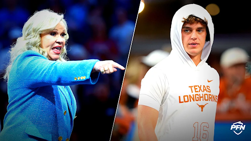
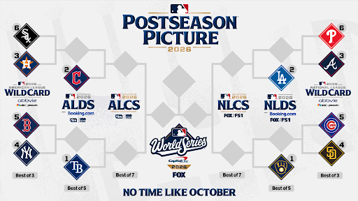
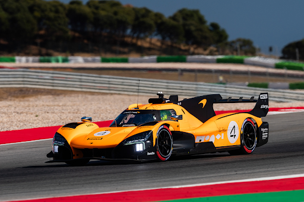
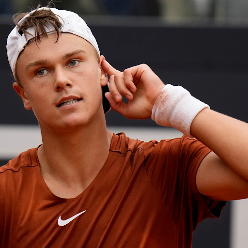
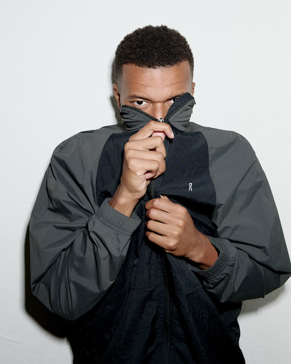

Kicking off the semester with everything happening in the world of sports: record-breaking NFL scoring, Arch Manning’s apology, MLB’s looming lockout, McLaren’s new partnership, Holger Rune’s comeback, and Mbappé’s move to On Soccer.
NFL Week 1 Sees Record Scoring Numbers, What Does This Mean?
By Gavin Resendez Lopez
In week 1 of the NFL season, every team combined for a total of 791 points scored, tying a record established in 2012 for the most points scored in the first week.
Over the last few seasons, a big point of discussion between fans and experts alike has been the decline of offensive production. Many have cited the decline of 4,000-yard passers.
On Sept. 9, the 2026-27 season kicked off with a Super Bowl rematch between the Seattle Seahawks and New England Patriots. The final score was 13-10, a defensive struggle that led fans to continue these discussions.
When the final game of the week concluded, a new conversation began. Despite multiple premier offenses such as the Rams, Cowboys, Falcons, Seahawks, Chargers, and Broncos all scoring 20 or fewer points, the scoring record was tied.

Graphic via Yahoo Sports
NFL defenses have evolved to prevent explosive passing attacks, prioritizing preventing long yardage plays through multiple safeties and sending creative blitz packages.
Multiple key performances from Week 1 were running backs; the players include Jahmyr Gibbs, Breece Hall, Derrick Henry, D’Andre Swift, Bijan Robinson, David Montgomery, Ashton Jeanty, and Chuba Hubbard, who all had a touchdown and 100 total yards, except for Montgomery and Hubbard.
The shift to prioritizing the rushing attack was also highlighted by teams being under center on 42.5% of plays, the highest since 2013. Teams are using heavier formations and plays to counter new defenses, allowing continued success as well in week 2, with 8 teams scoring 30 or more points.
All eyes will be on week 3 to see if defenses will respond, or if the return to form for NFL offenses will continue.
College Football
Manning Faces Backlash Over AI Video Comments
By Cody Feldman
Last week, star QB Arch Manning came under fire for comments he made about an AI video circulating on X after Texas defeated Ohio State.
After the win, ESPN reporter Holly Rowe attempted to interview Texas head coach Steve Sarkisian on the field. Instead, Sarkisian stormed away from the interview, exclaiming “Hook Em” before leaving Rowe on the field without a quote. Many criticized Sarkisian for leaving Rowe on the field, believing it was disrespectful to leave the reporter after such a win.
In a presser the next Monday, Manning laughed about an AI-edited video, which depicted Sarkisian hitting Rowe on the field. The video, which had many online talking about the way it portrayed domestic violence, drew the laughs of not only Manning but the rest of the predominantly male press room. Manning was heavily criticized for his humorous interpretation of the video. He gave an apology on his Instagram story the next day for his comments.

Photo via Yahoo Sports
“There is nothing funny about it. It’s easy to say that I didn’t mean it, but I know my words and actions were hurtful to a lot of people,” Manning wrote in his story. “I specifically want to apologize to Holly Rowe for what she has personally had to deal with because of my comments.”
Rowe wrote on her X account that she had a conversation with Arch and appreciated his apology. With the lapse in judgment behind him, Manning will look to keep the ball rolling for the 3-0 Longhorns when they take on Tennessee on the road on Saturday.
MLB
Baseball’s Last October?
By Shreyan Dey
Major League Baseball’s postseason starts this week, but the biggest fight in the sport won’t happen on a field this time.
MLB’s labor deal expires Dec. 1, and a lockout is what looks likely. The dispute centers on a salary cap, which is something baseball has never had.
Owners have proposed capping team spending at $245.3 million next year, with a payroll floor of $171.2 million. For context, the Mets opened 2026 with a payroll above $352 million. Under the capping plan, eight clubs would have to cut payroll by a combined $578 million, while twelve would have to add $617 million to reach the floor.

Photo via MLB
Owners argue it would help small teams keep homegrown stars. Critics say the real motive is the belief that being the only uncapped major North American league hurts franchise values.
History provides a big picture too. Rob Manfred was a junior lawyer on the owners’ side the last time MLB pushed for a cap, in 1994, which led to a strike that canceled that year’s World Series.
So concerns rise this October. If owners and players don’t agree on a deal by December 1, owners are expected to lock the players out, which could shut MLB down until a deal gets done.
Formula 1
The Fastest Cars Are Never Finished
By Deepti Adhyam
An F1 car can travel at more than 200 miles per hour. But what makes it fast isn’t just speed; it’s the willingness to find what isn’t working and change it.
McLaren Racing announced a new partnership with SharkNinja on September 15, bringing the two companies together around a shared focus on innovation and consistent improvement. The multi-year partnership makes SharkNinja an official partner across McLaren’s Formula 1, IndyCar, Hypercar and F1 Academy teams.

Photo via McLaren
In Formula 1, a car is never truly finished. Teams are always analyzing data and making adjustments to improve performance. SharkNinja follows a similar approach with its products, using consumer feedback and innovation to develop and improve what it creates.
Through the partnership, SharkNinja will also take part in McLaren’s Racing Accelerator Programme, which will give the company access to McLaren’s engineering expertise as it works on future product development.
But the idea of constant improvement extends beyond racing and technology.
College can make it feel like we’re supposed to have everything figured out. We’re expected to know what we want to study, what career we want, and who we want to become. But maybe we aren’t meant to arrive at one final version of ourselves.
Maybe life works more like engineering.
You build. You learn. You adjust. Then repeat all over again.
There is no finished version of anything, including ourselves. And that isn’t something to be afraid of. Maybe that’s the point.
Tennis
Advantage In: Holger Rune’s Return
By Emily Cheong
On September 18th, 2026, the highest-ranked male Danish player in tennis history stepped back onto the hard court. Holger Rune made his reappearance at the Davis Cup, the men’s international team tennis event, aiding Team Denmark in securing the win over Bulgaria with two singles victories in two days.
This marked Rune’s first official game back after an 11-month hiatus from a devastating Achilles injury last fall against Ugo Humbert. With a career-high ranking of world No. 4 in 2023, Rune currently sits around the top 140s in the current ATP Tour singles rankings.

Photo via The Guardian
Since Rune’s injury, the world of men’s tennis has faced major shifts in its atmosphere: Carlos Alcaraz faced multiple Grand Slam withdrawals, Alexander Zverev won his first two Grand Slam singles titles, and Novak Djokovic is no longer in the top 10.
With all of this happening, it leaves the current ATP tour vulnerable to a rankings disturbance, giving underdogs and steady competitors a chance to climb out on top.
Could Rune reclaim a top position once again with this change in dynamics?
His most recent match had him winning a three-set thriller against Grigor Dimitrov, who was able to defeat Mensik and Berrettini at Wimbledon before ultimately falling. If he is able to keep up with his current recovery status and maintain this streak of competitiveness in ATP competitions, men’s tennis may face the resurgence of Holger Rune once again.
Soccer
Mbappé Leaves 20-Year Partnership With Nike to Join On Soccer
By Nico Borrelli
On September 18th, Kylian Mbappé announced via Instagram that he is leaving his 20-year partnership with Nike and joining the new On Soccer division. This switch signifies both a breakthrough in the world of soccer equipment and a change in the structure of player endorsements.
Mbappe first signed for Nike at just 8 years old and has been partnered with the brand for the past 20 years. This switch marks the first sponsorship change in his professional career.

Photo via ON
The Swiss brand On recently announced its new branch in the soccer market. They look to use the design innovations that quickly made them a household name in the running market to establish themselves as a marquee soccer brand and rival major brands like Nike and Adidas. The On Soccer cleats set to be released in 2027 will utilize On’s highly innovative LightSpray technology, which sprays a lightweight, single-piece upper directly onto the structural base of the cleat, according to On.
Mbappe reportedly turned down a 10-year contract renewal with Nike worth more than 20 million a year in favor of joining the On project. We do not know the salary Mbappé accepted with On, but it is assumed that the equity offered by On played a big role in his decision. This decision highlights the shift in modern-day sports endorsements where players are valuing equity and involvement with a company more than just the paycheck itself. With On, Mbappé joins as a global ambassador and shareholder as they launch the new brand, an opportunity that comes from joining a new brand rather than an already established company like Nike.